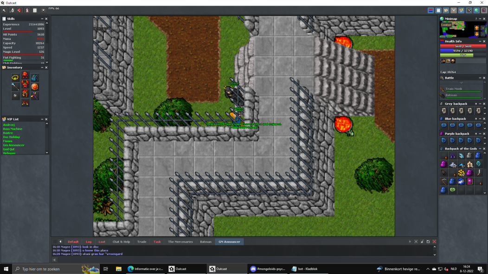
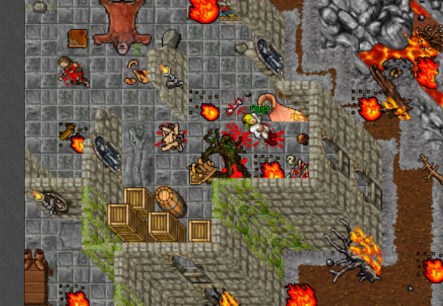

Magic mushrooms of Outcast
Main city

Depot, main city

Depot, trainers

City teleports

Dragon islands

Dragon islands

Elite lands

Football area

Forgotten islands

Golden boots quest


Jungle, east

Jungle, South


North area of main city

Somewhere in the North of city

Somber inferno


Spider islands

Spider islands

Warlocks area
Aberon

Deeper banuta

Jungle city
Adicama

Adicama, Eastern exp doors
Image of Adicama map, 2 mushrooms
Forbidden forest
Forbidden forest North-west corner
Forbidden forest far North

Forbidden forest beginning

Forbidden forest underground
Drushak

Drushak, harashaki quest
Lithgow
Lithgow North-west corner

Lithgow South-east corner

Zenith set quest area
Zenith set quest area
Zenith set quest area
Edron
Edron boat

Edron North East area

Edron orcs
Map of edron, orcs area
Tarid

Tarid city, middle arena

Oceanic lizard weapon quest path
Tarid, Deathlands, bright sword / hota piece quest

Oceanic lizard weapon, house
Valmoor

Valmoor North area trolls
Plains

Plains, demons area underground

From magicians creek cp, west side house
Way to Plains quest, krampus house in the city

Plains area, first city

Plains checkpoint

Plains area at the stone lever area

Magicians creek North-east place

Map of Rose shield area, hidden under a tree
Beluna


Sky weapon area, East from stairs
Sky weapon area, ending
Wrecked ship area

Wrecked ship ending, before rewards

Wrecked ship, with some demons
Mysticon
Before the teleport to the Mysticon
Mysticon, after long path

Mysticon, east from checkpoint

Mysticon main area

Mysticon, far to the West

Mysticon, last area. West place, South are the ladders

Mysticon, before reward room, south


Mysticon quest area, after serpent boss. West side stairs down and go south-west.
Mysticon. Wizard boss is to the West from here.
Oceanic lizard shield

Oceanic lizard shield area, North-east
Skyrider shield
Skyrider shield, from cp2 underground the tower

Skyrider shield, second last place

Skyrider shield, last place